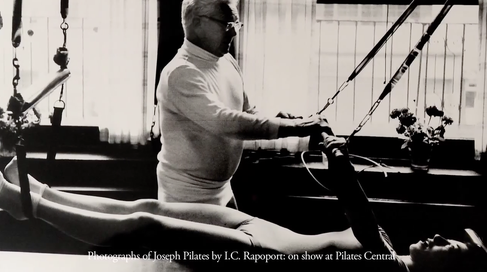
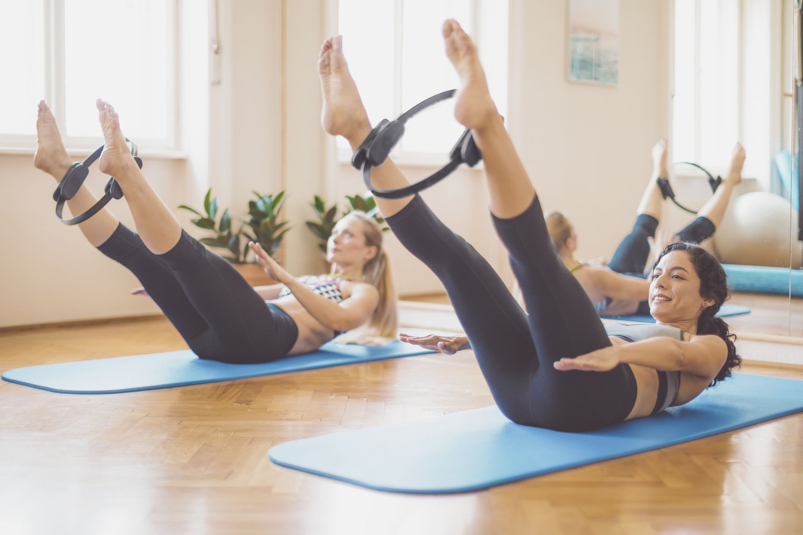

What Is Pilates
Pilates is a holistic fitness system that focuses on strengthening the core muscles, enhancing flexibility, and improving overall body awareness. It emphasizes controlled and precise movements, often performed on a mat or specialized equipment. Developed by Joseph Pilates in the early 20th century, it incorporates principles such as concentration, control, centering, precision, and flowing movement. Pilates is known for promoting better posture, increased strength, and improved balance, making it a popular choice for people seeking a mind-body approach to fitness and well-being.
- Pilates exercises often target the deep muscles of the abdomen, lower back, and pelvic floor, collectively known as the "core," to build stability and support for the spine.
- The practice of Pilates involves controlled and deliberate movements that require focused attention, promoting mindfulness and enhancing the mind-body connection.
- Pilates can be adapted to suit various fitness levels, from beginners to advanced practitioners, making it accessible to a wide range of individuals.
- While some Pilates exercises can be performed on a mat, the method also incorporates specialized equipment like the reformer, Cadillac, and chair, which offer resistance and assistance to challenge and refine movements.
- Many people turn to Pilates to address specific fitness goals, such as improving posture, rehabilitating injuries, increasing flexibility, and enhancing overall physical and mental well-being, making it a versatile and comprehensive fitness practice.
What is the different between Yoga and Pilates
Yoga is an ancient practice with its roots in India, dating back thousands of years. It encompasses a wide range of physical, mental, and spiritual disciplines.
Yoga has a strong spiritual and philosophical component. It incorporates principles like mindfulness, meditation, and the pursuit of spiritual enlightenment. Yoga includes various paths, such as Bhakti (devotion), Karma (action), Jnana (knowledge), and Hatha (physical postures).
Yoga involves a wide variety of physical postures (asanas) that focus on flexibility, balance, and strength. These postures can vary greatly in complexity and intensity.
The goals of yoga extend beyond physical fitness to include mental and spiritual well-being. Yoga is known for reducing stress, increasing flexibility, promoting relaxation, and enhancing mental clarity.

Pilates is a relatively modern system developed by Joseph Pilates in the early 20th century. It was initially designed as a rehabilitation method for injured soldiers.
Pilates is primarily a physical fitness system that focuses on strengthening the core, improving posture, and enhancing physical alignment. While it emphasizes mindful movement, it lacks the spiritual and philosophical aspects of yoga.
Pilates exercises are characterized by precise, controlled movements that target the core muscles and promote strength, stability, and flexibility. Pilates incorporates both mat-based exercises and exercises performed on specialized equipment.
Pilates primarily aims to improve physical fitness, with a focus on core strength, posture, and overall body awareness. It can also help with injury rehabilitation, better posture, and enhanced body alignment.